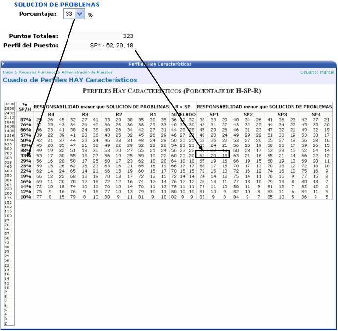

La información de este cuadro, define si el puesto tiene un grado de responsabilidad mayor que la solución de problemas, o si están nivelados, o si la responsabilidad es menor que la solución de problemas.
En el siguiente ejemplo se muestra los valores que tiene el perfil del puesto, según el porcentaje de la solución de problemas:
